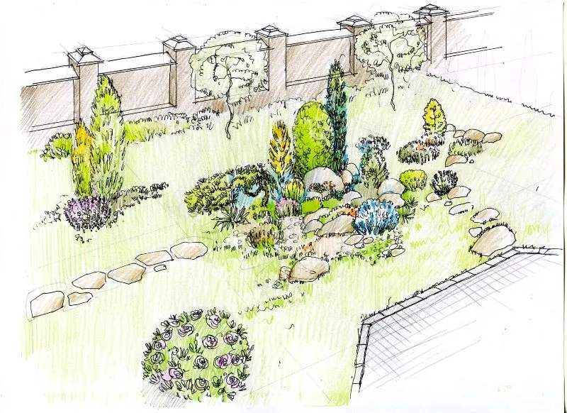

Ландшафтный дизайн 2 мин чтения
Какие принципы обязательно учитывать при обустройстве участка
Алексей Руденко, художник по ландшафту

Любой обустраиваемый участок должен иметь художественный образ — эстетический облик. Поэтому начинать нужно с архитектурно-ландшафтной концепции будущего сада.
Например, устройте на участке уголок естественного ландшафта — по принципу «природа в миниатюре». Возникший замысел лучше сразу закрепить на бумаге в виде плана: где пройдут дорожки, где будут клумбы, газон, группы зелёных насаждений и т. д.
Выберите стиль и композиционные приёмы, которые будете использовать. Это может быть геометрически правильная композиция (регулярная планировка), живописная (пейзажная планировка) или смешанная.
Гармония и цвет
Участок должен быть гармоничным: все его элементы — едины и соподчинены, объёмы, фактуры и цвета уравновешены. Обязательно учитывайте стилистику окружающей архитектуры: скорее всего, именно она станет доминантой ваших композиционных решений, а всё остальное — альпинарии, беседки, фонтаны, террасы, зелёные насаждения — будет ей подчинено.
Гармония достигается такими средствами, как пропорция, масштаб, ритм, контраст, нюанс, тождество, а если сад вы делаете сами — интуицией и врождённым чувством гармонии.
Создавайте настроение и привлекательность сада яркими цветовыми акцентами. Оранжевый тонизирует, жёлтый стимулирует зрение и нервную деятельность, красный возбуждает, белый — нейтральный, чистый, фоновый. Вместе они наполнят сад положительными эмоциями. Главное — не переборщить: помните о равновесии, ведь работа с цветом подобна музыке.
Практические советы
- Простота. В концепции используйте принцип «красота без пестроты»: сдержанность и стилистическая утончённость. Избегайте перенасыщенности, излишней загруженности и цветовой аляповатости.
- Всесезонность. Сад должен смотреться круглый год. Этого добиваются, например, сделав «скелетом» озеленения вечнозелёные растения и лиственные с интересной формой ствола.
- Цветение. Создайте сад с долгим периодом цветения: подберите растения, которые цветут «одно за другим» или долго.
- Адаптированность. Все растения должны подходить для нашей климатической зоны.
- Практичность. Растения требуют ухода, причём разного — учитывайте это при подборе.
- Свет и тень. Учитывайте освещённость в разное время дня, в том числе искусственную подсветку, и стороны света — так вы максимально подчеркнёте красоту каждого растения или группы, форму, пластику и фактуру элементов ландшафта.
- Инженерия. Обеспечьте полив, ночное освещение участка и, если нужно, отвод ливневых (а возможно, и грунтовых) вод от дорожек, отмосток, подпорных стенок и т. п.
Какие тенденции сейчас в ландшафтном дизайне?
Если говорить о мировых направлениях в целом — невероятное стилистическое разнообразие с уклоном к естественному саду (пейзажный, асимметричный стиль). Но, мне кажется, доминирует так называемый минимализм — это связано с тенденциями в архитектуре и дизайне интерьеров. Внешне это простота и минимум средств выражения, а внутри — композиционная сложность, декоративные, зачастую экзотические растения, натуральные и экологичные материалы.
Насколько у нас популярен ландшафтный дизайн?
Скажу как на духу: популярен — потому что модно, и не только. Растёт эстетический уровень наших граждан, их стремление к прекрасному и понимание того, как важно грамотно оформлять архитектурную среду — наравне с архитектурой зданий и интерьеров. Поэтому интерес к ландшафтному проектированию растёт из года в год.